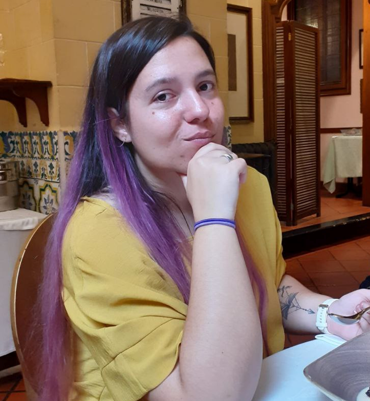

Sandra Malpica Mallo, Assistant Professor
smalpica@unizar.esUniversidad de Zaragoza, I3A
Hi! I am currently an Assistant Professor at the Centro Universitario de la Defensa (Zaragoza, Spain).
Previously I was a postdoc researcher at Universitat Politécnica de Catalunya (UPC) working with
Prof. Nuria Pelechano and Prof Oscar Argudo.
I obtained my Ph.D. in Feb. 2023 working under the supervision of Prof. Belen Masia and Prof. Diego Gutierrez at the Graphics and Imaging Lab. I obtained my Bachelor degree at Universidad de Zaragoza, majoring in Computer Engineering (with a Computer Science mention) in 2017. Later, I obtained my Master degree at the same university, majoring in Biomedical Engineering in 2018. During 2019 and 2020 I spent some months as an intern with Adobe Research and Facebook Reality Labs respectively.
I am really interested in the particularities of how people perceive their surroundings, and leveraging this knowledge to address current challenges in the computer graphics field, either software- or hardware-caused. I specialize in virtual reality and in designing, executing, and analyzing user studies to systematically investigate complex aspects of human behavior and sensory processing, particularly in audiovisual contexts.
Sideral (public) CV (Last updated on 12/2024)